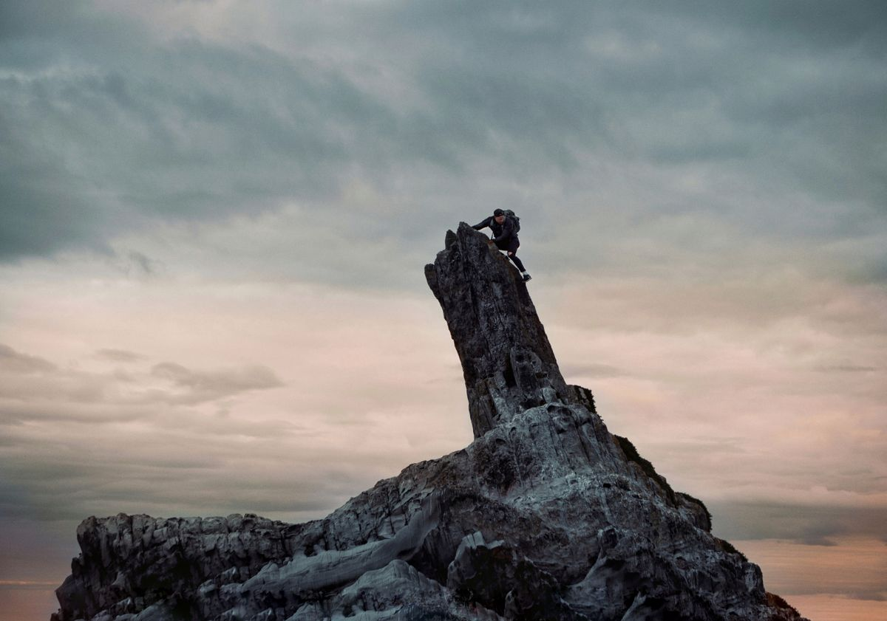
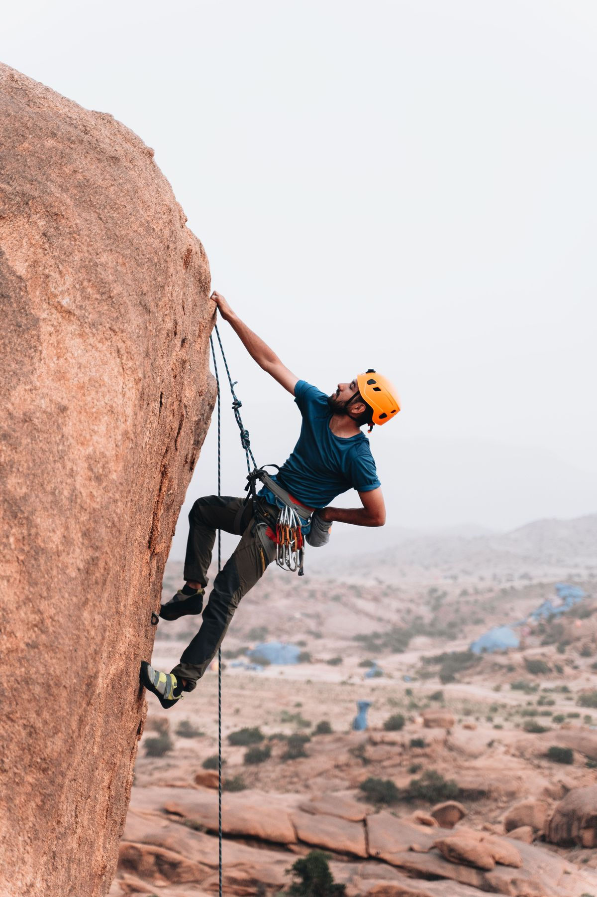
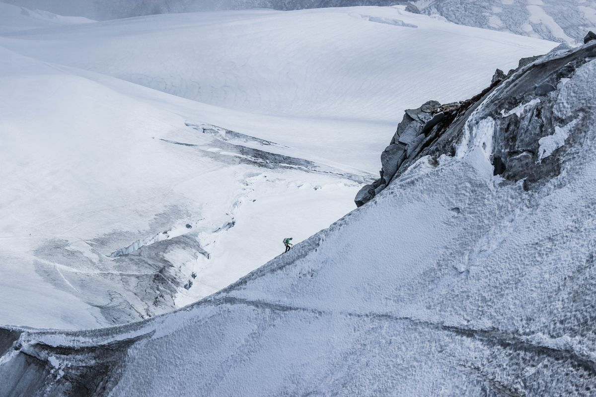
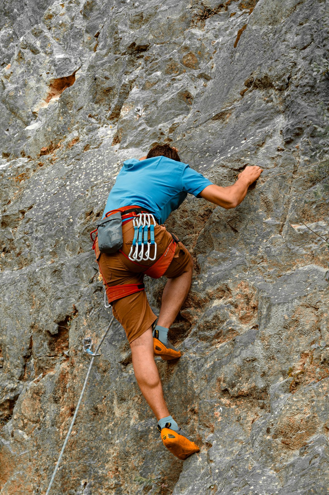
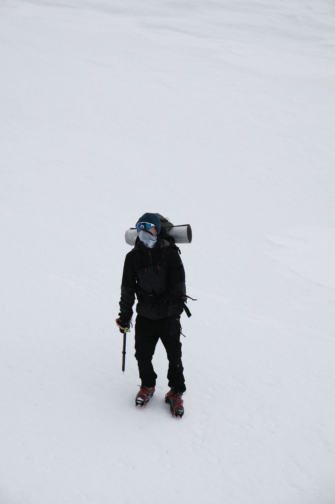

Choose with clarity
Understand the altitude, season, difficulty and time each route asks of you.
Alpine Ascents · Independent mountain field guide
Big mountains. Clear eyes. Good preparation.
Find a route, build your mountain sense and let curiosity lead the way.
The long way is the good way
A summit is a point on a map.
The journey is the whole story.
The best mountain days begin before the first footstep: with thoughtful plans, steady preparation and respect for the wild places we visit.
Get to know usEvery route has its own rhythm.
Choose yours with care.
Find your line
From your first high-altitude steps to ambitious alpine lines, get to know the mountain before you choose your next challenge.
All expeditions
The first light makes the early start worth it.Leave room for wonder
Preparation isn't the opposite of wonder. It's what lets you meet the mountain with a clear head and an open heart.
Understand the altitude, season, difficulty and time each route asks of you.
Gain relevant experience, plan acclimatization and check conditions before departure.
The mountain will be there. Your safety and your team come first.
Before you head out
Every mountain asks different questions. Start with your route, your team and today's conditions—not somebody else's checklist.
Open the field guide
Match the terrain and technical demands to your team's experience. Confirm access, permits and local rules before travel.
Compare route profiles
Altitude illness can affect anyone. Plan a gradual ascent and stop going higher if symptoms develop.
Review mountain safety
Choose equipment for the actual route, inspect it and practise essential systems with qualified instruction.
Explore climbing guides
Review current weather and hazards, share your itinerary, agree on a turnaround time and carry a communication plan.
Use the safety guideNotes from the mountain world
Explore notable milestones and meaningful context from the wider mountaineering world.
Explore all field notesLoading mountain field notes…
Your next chapter starts out there
Follow your curiosity, ask the big questions and take the first thoughtful step toward your next horizon.